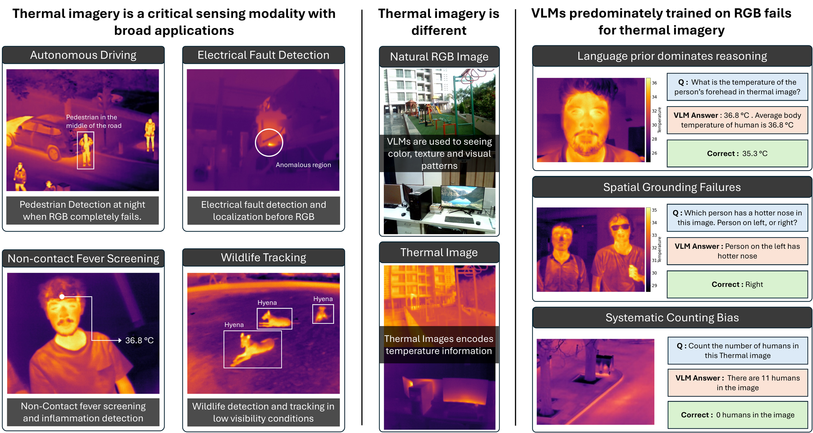
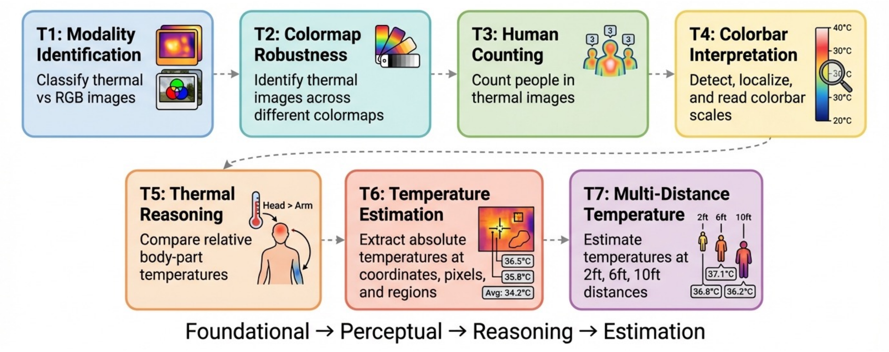
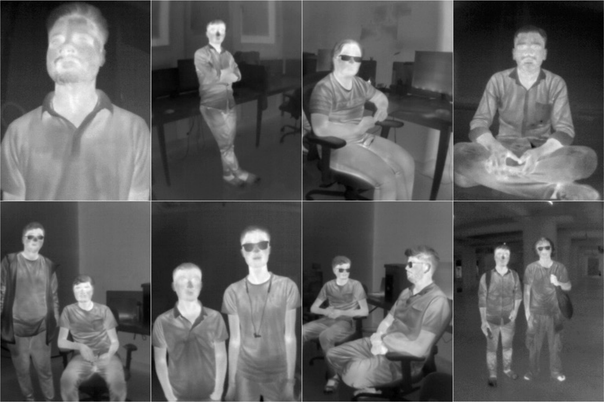
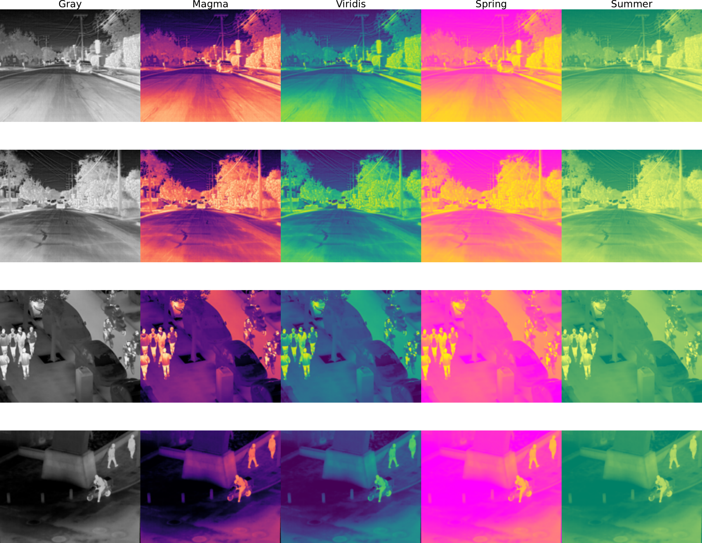

Can vision-language models reason about temperature? We evaluate 25 VLMs across ~55,000 thermal VQA pairs and find critical gaps in thermal understanding.

Thermal imagery enables critical perception tasks where RGB fails, but VLMs trained predominantly on RGB exhibit systematic errors driven by modality mismatch and language priors.
Vision language models (VLMs) achieve strong performance on RGB imagery, but they do not generalize to thermal images. Thermal sensing plays a critical role in settings where visible light fails, including nighttime surveillance, search and rescue, autonomous driving, and medical screening. Unlike RGB imagery, thermal images encode physical temperature rather than color or texture, requiring perceptual and reasoning capabilities that existing RGB-centric benchmarks do not evaluate.
We introduce ThermEval-B, a structured benchmark of approximately 55,000 thermal visual question answering pairs designed to assess the foundational primitives required for thermal vision language understanding. ThermEval-B integrates public datasets with our newly collected ThermEval-D, the first dataset to provide dense per-pixel temperature maps with semantic body-part annotations across diverse indoor and outdoor environments.
Evaluating 25 open-source and closed-source VLMs, we find that models consistently fail at temperature-grounded reasoning, degrade under colormap transformations, and default to language priors or fixed responses, with only marginal gains from prompting or supervised fine-tuning.
The benchmark is organized from simple modality identification to complex temperature estimation, each task probing complementary aspects of thermal vision-language understanding.
Can VLMs distinguish thermal images from RGB? We test binary classification using paired thermal-RGB images from FLIR and LLVIP datasets.
Do models rely on color cues or true modality understanding? We test identification under diverse colormap transformations (Magma, Viridis, Summer, Spring).
Can VLMs count people in thermal images? We evaluate a fundamental perceptual capability using road scenes with varying pedestrian counts.
A prerequisite for temperature reasoning: can models detect, localize, and extract temperature ranges from embedded colorbars?
Can models reason about relative temperatures? We test comparative reasoning across individuals and within-body-part ranking tasks.
Absolute temperature estimation at three difficulty levels: coordinate-based, pixel-based (marked locations), and region-based (semantic body parts).
How does imaging distance affect temperature estimation? We evaluate at 2ft, 6ft, and 10ft to assess robustness to depth variation.

The first thermal dataset combining raw thermal imagery, per-pixel temperature maps, and diverse semantic body-part annotations across indoor and outdoor environments.
Dense temperature annotations from TOPDON TC001 Plus with ±1°C accuracy and sub-40 mK sensitivity.
Diverse demographics (age 18-47, varied body types) captured with informed consent and ethics approval.
Three annotators per image with polygonal segmentations for forehead, chest, nose, and full body.
Indoor and outdoor scenes: offices, labs, parks, workspaces with varied postures and activities.
Inter-annotator BBox IoU 0.77, Segm. IoU 0.72, BBox Dice 0.87, Segm. Dice 0.84.
Released under CC BY-NC 4.0 on Kaggle with Croissant metadata for reproducible research.

We evaluate 25 VLMs spanning 0.3B to 235B parameters, including open-source, closed-source, and chart-focused models. Performance is assessed under zero-shot prompting, contextual prompting, and supervised fine-tuning.
ACC ↑ = higher is better. MAE ↓ = lower is better.
| Model | Params | T1 (ACC ↑) | T2 (ACC ↑) | T3 (MAE ↓) | T4 | ||||||
|---|---|---|---|---|---|---|---|---|---|---|---|
| FLIR | LLVIP | FLIR | LLVIP | FLIR | LLVIP | Detect | Position | Max | Min | ||
| Chart-Focused Models | |||||||||||
| ChartGemma | 3B | 0.50 | 0.50 | 0.00 | 0.00 | 3.04 | 1.25 | 0.48 | 0.45 | 0.04 | 0.03 |
| TinyCharts | 3B | 0.50 | 0.50 | 0.00 | 0.00 | 4.72 | 2.99 | 0.50 | 0.14 | 68.44 | 24.75 |
| ChartInstruct | 7B | 0.50 | 0.50 | 0.00 | 0.01 | 4.48 | 2.36 | 0.50 | 0.25 | 162.08 | 74.37 |
| Open-Source Models | |||||||||||
| Qwen-VL 2.5 | 8B | 0.99 | 1.00 | 0.99 | 1.00 | 3.55 | 0.89 | 1.00 | 1.00 | 0.00 | 0.00 |
| Intern-VL 3 | 8B | 1.00 | 1.00 | 1.00 | 1.00 | 3.02 | 0.64 | 1.00 | 1.00 | 9.15 | 0.82 |
| LLaMA-3.2 | 11B | 1.00 | 0.92 | 1.00 | 0.90 | 2.84 | 0.73 | 1.00 | 0.91 | 0.00 | 0.00 |
| Intern-VL 3 | 38B | 0.99 | 1.00 | 1.00 | 1.00 | 2.93 | 0.48 | 1.00 | 1.00 | 0.00 | 0.00 |
| BLIP-2 | 8B | 0.43 | 0.53 | 0.93 | 0.98 | 4.69 | 2.99 | 0.50 | 0.25 | - | - |
| Fine-Tuned & Baselines | |||||||||||
| Qwen-VL 2.5 (SFT) | 8B | 1.00 | 1.00 | 1.00 | 1.00 | 1.85 | 0.55 | 1.00 | 1.00 | 0.00 | 0.00 |
| Human | -- | 0.97 | 0.98 | 0.98 | 0.99 | 1.73 | 0.30 | 1.00 | 1.00 | 0.00 | 0.00 |
ACC ↑ = higher is better. MAE ↓ = lower is better (in °C).
| Model | Params | T5 (ACC ↑) | T6 (MAE ↓) | T7 (MAE ↓) | ||||||
|---|---|---|---|---|---|---|---|---|---|---|
| Double | Single | Coords | Marker | Region | 2ft | 6ft | 10ft | |||
| Phi-3 | 4B | 0.56 | 0.22 | 3.49 | 3.92 | 2.26 | 1.19 | 1.14 | 1.25 | |
| Qwen-VL 2 | 8B | 0.41 | 0.51 | 2.14 | 3.68 | 2.01 | 1.25 | 1.00 | 0.89 | |
| Qwen-VL 2.5 | 8B | 0.44 | 0.32 | 3.21 | 2.88 | 2.14 | 1.26 | 0.93 | 0.87 | |
| LLaMA-3.2 | 11B | 0.61 | 0.42 | 3.00 | 3.99 | 3.03 | 2.39 | 1.74 | 1.48 | |
| Intern-VL 3 | 38B | 0.48 | 0.41 | 2.97 | 3.63 | 1.51 | 0.89 | 0.97 | 0.98 | |
| Qwen A22 | 235B | 0.54 | 0.34 | 3.59 | 3.72 | 3.59 | 1.23 | 1.23 | 1.40 | |
| Closed-Source Models | ||||||||||
| Gemini 3 Pro | ? | 0.74 | 0.61 | 1.94 | 1.86 | 1.47 | 1.00 | 0.74 | 0.90 | |
| Gemini 3 Flash | ? | 0.55 | 0.51 | 1.96 | 2.04 | 1.65 | 1.19 | 1.00 | 1.21 | |
| Fine-Tuned & Baselines | ||||||||||
| Qwen-VL 2.5 (SFT) | 7B | 0.58 | 0.56 | 1.58 | 1.55 | 1.03 | 0.53 | 0.49 | 0.61 | |
| Human | -- | 0.84 | 0.54 | -- | 2.73 | 2.04 | 1.23 | 1.20 | 1.22 | |
Models default to canonical values like 36.8°C (body temperature) or fixed outputs like 0°C, 273 K, or "11" regardless of the actual thermal scene, indicating reliance on language priors rather than visual grounding.
While VLMs handle basic modality identification well, complex colormaps (Summer, Spring) cause significant performance drops, suggesting models rely on low-level color statistics rather than modality-invariant representations.
Failure modes persist across model scales from 0.3B to 235B parameters. InternVL 3 (38B) lags behind its 8B variant on some tasks. The bottleneck is cross-modal grounding, not model capacity.
Models that fail at colorbar interpretation (T4) consistently underperform on downstream temperature tasks (T6-T7), demonstrating that errors on prerequisite tasks predict failures on complex thermal reasoning.
Supervised fine-tuning of Qwen-VL 2.5 brings near-human performance on most tasks, but 1-2°C errors remain in temperature estimation -- insufficient for safety-critical applications like fever screening.
Contextual prompts improve basic modality recognition (+37% on T2) but yield inconsistent or negative effects on thermal reasoning (T5-T7), showing that prompt engineering cannot compensate for missing thermal grounding.

If you find ThermEval useful in your research, please cite our paper.
@inproceedings{shrivastava2026thermeval,
title = {ThermEval: A Structured Benchmark for Evaluation of
Vision-Language Models on Thermal Imagery},
author = {Shrivastava, Ayush and Gangani, Kirtan and Jain, Laksh
and Goel, Mayank and Batra, Nipun},
booktitle = {Proceedings of the 32nd ACM SIGKDD Conference on
Knowledge Discovery and Data Mining (KDD)},
year = {2026}
}We acknowledge Google for providing access to the Gemini Academic Program Award, which enabled us to run and evaluate the Gemini models reported in this work. The study was approved by the Institutional Ethics Committee (IEC) at IIT Gandhinagar.